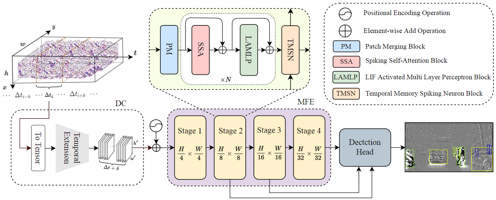
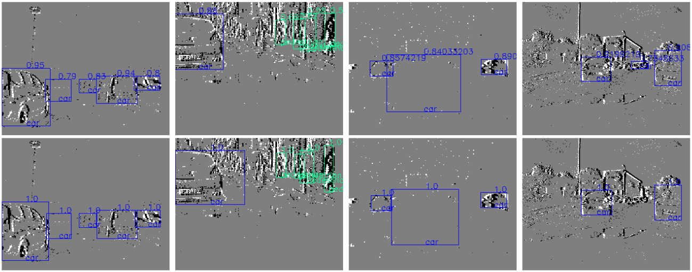
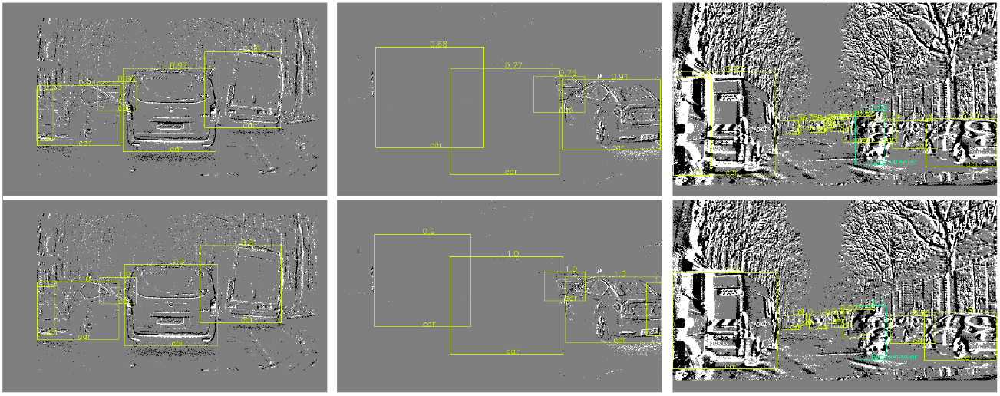

了解 SpikingViT
SpikingViT 的主要特点
SpikingViT是一种基于视觉变换器（Vision Transformer，ViT）架构的脉冲神经网络（SNN）。它是一种新颖的脉冲神经网络，可以用于实时的目标检测和分类任务。这种SNN架构是参照ViT架构设计的，并且SNN模型是通过脉冲神经网络训练框架来训练的。训练完成后，SNN模型被转换成脉冲神经网络推理框架，以实现实时的目标检测和分类功能。
SpikingViT 的模型架构总览图

SpikingViT 在数据集上的性能表现
Gen1 数据集上检测效果与GroundTruth的对比

Gen4 数据集上检测效果与GroundTruth的对比

使用 Gen4 的权重在DSEC-Detection数据集上的泛化性能表现

SpikingViT 的主要应用
SpikingViT可以用于实时目标检测和分类任务，例如实时视频监控、实时交通监控等。通过使用SpikingViT，可以实现对实时视频流中的目标进行实时检测和分类，从而提高系统的实时性和准确性。
SpikingViT 的主要优势
SpikingViT的实时性和准确性都优于传统的深度学习模型。它能够处理大量的数据，并能够实时地进行目标检测和分类。此外，SpikingViT的脉冲神经网络训练框架可以提高模型的收敛速度，从而提高模型的准确性和实时性。
SpikingViT 的主要挑战
SpikingViT的训练过程比较复杂，需要使用脉冲神经网络训练框架来进行训练。此外，由于脉冲神经网络的计算特性，SpikingViT的推理过程也需要进行相应的优化。